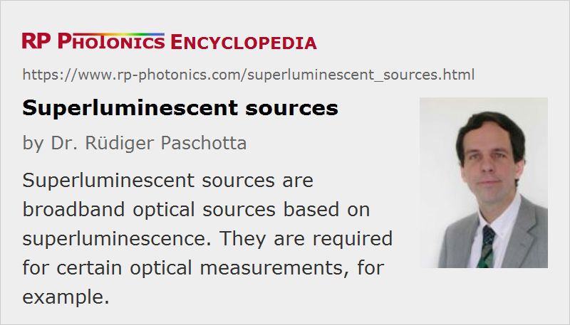

Superluminescent Sources
Acronym: SFS
Definition: optical sources based on superluminescence
German: superlumineszente Lichtquellen
Categories: photonic devices, non-laser light sources
How to cite the article; suggest additional literature
Author: Dr. Rüdiger Paschotta
Superluminescent sources (also called ASE sources) are broadband light sources (white light sources) based on superluminescence. (They are often erroneously called superfluorescent sources, which would be based on the substantially different phenomenon of superfluorescence.) Essentially, a superluminescent source contains a laser gain medium which is excited in order to emit and then amplify luminescent light.
A superluminescent source has a very low temporal coherence, resulting from the large emission bandwidth (compared with that of, e.g., a laser). This greatly reduces the tendency for laser speckle, as are often observed with laser beams, e.g. from laser diodes. On the other hand, spatial coherence is usually very high: the output of a superluminescent source can be very well focused (similar to a laser beam) and is thus suitable for obtaining by far higher optical intensities than with an incandescent lamp, for example. This makes such devices interesting for applications such as optical coherence tomography (OCT) (e.g. in the medical sector), device characterization (e.g. in optical fiber communications), gyroscopes, and fiber-optic sensors. See the article on superluminescent diodes for more details on applications.
The main kinds of superluminescent sources are superluminescent diodes (SLDs) and fiber amplifiers. Fiber-based sources can provide much higher output powers, whereas SLDs are much more compact and also cheaper. In both cases, the emission bandwidth is at least several nanometers and often tens of nanometers, sometimes even well above 100 nm.
For all high-gain ASE sources, it is very important carefully to suppress any optical feedback, e.g. via reflections from fiber ends, because this can lead to parasitic lasing. For fiber-based devices, Rayleigh scattering from within the fiber may introduce the final performance limitations.
Suppliers
The RP Photonics Buyer's Guide contains 32 suppliers for superluminescent sources. Among them:
Questions and Comments from Users
Here you can submit questions and comments. As far as they get accepted by the author, they will appear above this paragraph together with the author’s answer. The author will decide on acceptance based on certain criteria. Essentially, the issue must be of sufficiently broad interest.
Please do not enter personal data here; we would otherwise delete it soon. (See also our privacy declaration.) If you wish to receive personal feedback or consultancy from the author, please contact him e.g. via e-mail.
By submitting the information, you give your consent to the potential publication of your inputs on our website according to our rules. (If you later retract your consent, we will delete those inputs.) As your inputs are first reviewed by the author, they may be published with some delay.
Bibliography
| [1] | M. J. F. Digonnet, “Theory of superfluorescent fiber lasers”, IEEE J. Lightwave Technol. 4 (11), 1631 (1986), doi:10.1109/JLT.1986.1074661 |
| [2] | P. F. Wysocki et al., “Broadband fiber sources for gyros”, Proc. SPIE 1585, 371 (1992), doi:10.1117/12.135068 |
| [3] | P. F. Wysocki et al., “Characteristics of erbium-doped superfluorescent fiber sources for interferometric sensor applications”, IEEE J. Lightwave Technol. 12 (3), 550 (1994), doi:10.1109/50.285318 |
| [4] | R. Paschotta et al., “Efficient superfluorescent light sources with broad bandwidth”, J. Sel. Top. Quantum Electron. 3 (4), 1097 (1997), doi:10.1109/2944.649547 |
| [5] | P. Wang and W. A. Clarkson, “High-power, single-mode, linearly polarized, ytterbium-doped fiber superfluorescent source”, Opt. Lett. 32 (17), 2605 (2007), doi:10.1364/OL.32.002605 |
| [6] | G. Smith et al., “High-power near-diffraction-limited solid-state amplified spontaneous emission laser devices”, Opt. Lett. 32 (13), 1911 (2007), doi:10.1364/OL.32.001911 |
| [7] | D. Y. Shen et al., “Broadband Tm-doped superfluorescent fiber source with 11 W single-ended output power”, Opt. Express 16 (15), 11021 (2008), doi:10.1364/OE.16.011021 |
| [8] | M. Blazek et al., “Unifying intensity noise and second-order coherence properties of amplified spontaneous emission sources”, Opt. Lett. 36 (17), 3455 (2011), doi:10.1364/OL.36.003455 |
| [9] | R. Paschotta, case study on a fiber-based ASE source |
See also: superluminescence, amplified spontaneous emission, superluminescent diodes, white light sources, coherence
and other articles in the categories photonic devices, non-laser light sources
|  |
If you like this page, please share the link with your friends and colleagues, e.g. via social media:
These sharing buttons are implemented in a privacy-friendly way!